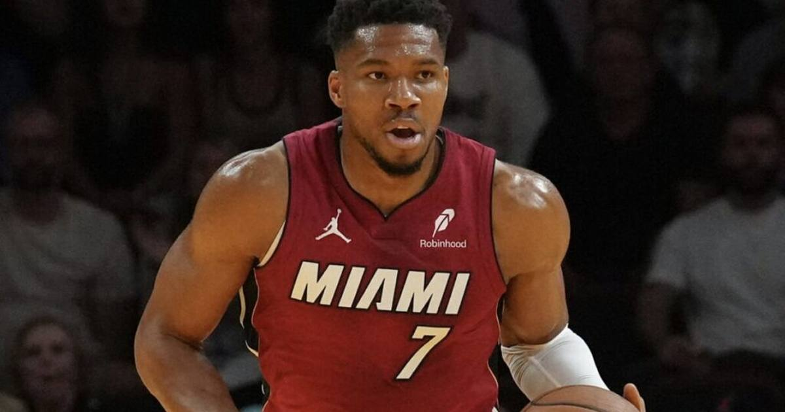

Giannis Drops 31/18/10 as the Heat Roll the Pacers 145-125 in Their First Home Win
Giannis Antetokounmpo posted his second triple-double as a Heat player — 31 points, 18 rebounds and 10 assists on 13-of-19 shooting — as Miami cruised past Indiana 145-125 for its first home win of the season.

The Miami Heat finally gave their home crowd a win, and Giannis Antetokounmpo gave them a show.
Antetokounmpo recorded a triple-double with 31 points, 18 rebounds and 10 assists — shooting 13-of-19 from the field — as Miami cruised past the Indiana Pacers 145-125 on Friday night in the Emirates NBA Cup opener for both teams. It was his second triple-double since joining the Heat, after his first one three nights earlier against Dallas.
A night of total control
Miami pulled away in the second half and never looked back. Bam Adebayo added 27 points and nine rebounds, and Klay Thompson scored 25 and sank seven three-pointers. Quenton Jackson led Indiana with 24 points off the bench, and Andrew Nembhard logged 22 points and nine assists, but the Pacers took their third straight defeat.
Antetokounmpo was the story from the opening tip to the final horn. He crashed the glass for offensive rebounds, finished through contact, and set teammates up in rhythm — the full two-way, do-everything package that has defined his move to Miami. The 17 rebounds tied the tone: Indiana never had a clean defensive possession all night.
What it means
Two triple-doubles in a week is a statement, even this early in the season. The first one came in a loss at Dallas; this one powered a 20-point rout and Miami's first home win of the year. If the Heat are going to climb out of their early hole, it will look a lot like this — Giannis dominating the paint, Adebayo cleaning up beside him, and Thompson spacing the floor around them.
Indiana, meanwhile, keeps sliding. Three straight losses, and a defense that had no answer for a 145-point night.
Gear up: Fanatics